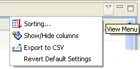
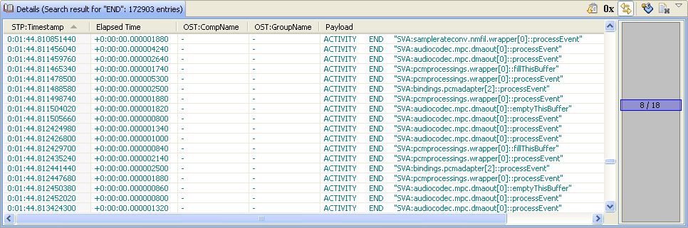

Trace Viewer Workbench
Documentation > References > Details View
|
|
Trace Viewer Workbench Documentation > References > Details View |
Description
This view provides extra information on elements selected in the Trace Viewer view. It is also used to display results of the Trace Viewer search feature. The content of this view changes when the selection changes in the Trace Viewer view. This behaviour can be enabled/disabled using the "Link" button.

Toolbar
| Icon | Name | Description |
| "Display relative TS" button | Displays the timestamps relatively to the first one in this view (consequently the first timestamp will be 0). | |
| "Hexadecimal display" button | Displays integer values as hexadecimal strings. | |
 / / |
Link button | Synchronizes the content of this view with the Trace Viewer selection. If this button is toggled off, the content of this view is not updated at each selection in Trace Viewer view. This can be easier to navigate after having searched for something (search results are displayed in this view). |
 |
"Show/Hide columns" button | Configure the columns that are shown in this view (many columns are hidden by default). |
| Clear button | Clears the view. |
Menu

| Icon | Name | Description |
 |
"Sort columns" button | Configure the sort order and columns that you want to apply to the view. Up to 4 columns can be sorted at a time with this tool. |
|
"Show/Hide columns" button | Configure the columns that are shown in this view (many columns are hidden by default). |
 |
"Export as CSV" button | Exports the content of this view as a CSV file. It opens a simple file dialog to choose the file to save the csv to. |
| "Revert to Default" button | Reverts the settings of this view to default (column sorting, column width). |
Tips
What line is this:
Double-click on an item in the list will select the corresponding line in the Trace Viewer view.
Missing info:
If you are looking for a data that is not present (Ex: instance class/method name), you should have look at the hidden columns ( button).
Search result:
When browsing in a search result you may want to disable the link with Trace Viewer selection. Toggle off the button to keep your search result in this view.
If the result of your search contains more than 10.000 elements, a page selection bar will appear at the right side, in order to select the page of your search result (drag&drop the page thumb
to change the current page).

Column description:
Keep the mouse pointer on the title of a column to get a tooltip with the description of the column data.
|
|
© STMicroelectronics and others 2010, 2011, 2012. All rights reserved. |